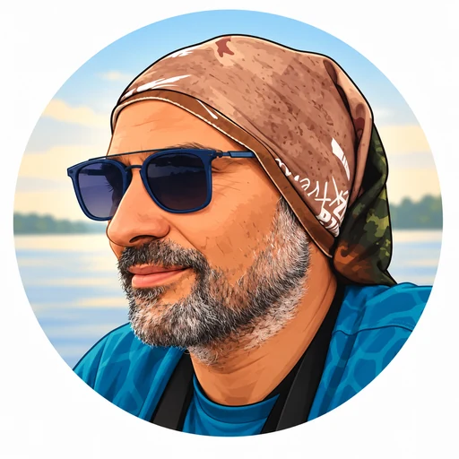
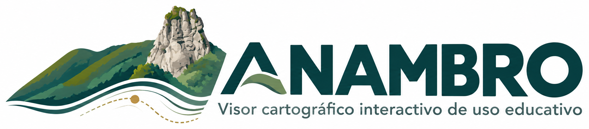

Mapa elaborado con ANAMBRO
Leyenda
N
Escala gráfica
0
ANAMBRO · Aarón Rodríguez González · Docente del Departamento de Geografía e Historia · IES ADEJE
![IES Adeje]()


ANAMBRO nace en el aula. Es un proyecto personal desarrollado por un profesor de Geografía e Historia de instituto para responder a necesidades reales de su trabajo docente: explicar mejor procesos geográficos e históricos, reunir herramientas cartográficas que suelen estar dispersas y crear materiales útiles para el alumnado.
Su desarrollo se realiza de forma independiente, en el tiempo libre de su autor, incorporando nuevas funciones a medida que aparecen necesidades en el aula. Aunque nació para uso propio, el proyecto queda abierto a la comunidad educativa para cualquier docente, estudiante o persona interesada que pueda encontrarlo útil.
Creado desde el aula, para el aula, y abierto a quien pueda encontrarlo útil.
Las últimas versiones amplían ANAMBRO más allá de la consulta: incorpora explicaciones y animaciones interactivas —como Insolación y latitud y Eratóstenes y la medida de la Tierra—, un editor de mapas políticos y mapas mudos para divisiones actuales e históricas, fondos marinos configurables, edición de rellenos y contornos, rotulación desplazable con líneas guía y exportación mediante el compositor cartográfico.
ANAMBRO combina cartografía base y temática, consulta espacial y temporal, mapa 2D y globo 3D, geodemografía mundial, perfiles topográficos y temáticos, mediciones, búsqueda y localización, leyendas dinámicas y composición de mapas para exportación. Las capas pueden consultarse, compararse y combinarse para estudiar el territorio, el paisaje, la población y los procesos históricos en distintas escalas.
ANAMBRO ya no es solo una herramienta de Geografía: la incorporación de cartografía histórica temporal permite utilizarlo también para Historia Universal, relacionando espacio, fronteras, entidades políticas y acontecimientos en distintos momentos históricos.
El visor nace con una atención especialmente detallada al territorio canario. Aquí se concentra su mayor riqueza temática y la integración más completa de fuentes oficiales, permitiendo estudiar cada isla desde la escala regional hasta el detalle local.
ANAMBRO ofrece ahora dos formas complementarias de explorar el planeta: un mapamundi 2D y un globo 3D. Las principales herramientas mundiales están disponibles en ambos modos y conservan su estado al cambiar de uno a otro.
Distancia: pulsa «Iniciar distancia» y marca puntos sobre el mapa. Área: marca al menos 3 vértices. Pulsa «Terminar» para cerrar la medición. El resultado permanece visible hasta que pulses «Borrar» o inicies otra medición. Después puedes arrastrar cualquiera de los puntos para modificar la medición en tiempo real.
Resultado: —
Activa la herramienta y marca tantos puntos como necesites. Puedes crear recorridos rectos, quebrados, sinuosos, semicirculares o circulares. Todos los vértices pueden desplazarse después. Pulsa «Generar perfil» cuando termines.
Resultado: —
Importa un track existente o créalo directamente en ANAMBRO. En modo «Seguir caminos», cada punto nuevo se enruta por la red de OpenStreetMap; puedes alternar con tramos manuales.
Estado: ningún track cargado.
El enrutamiento automático utiliza BRouter sobre datos de OpenStreetMap. Si un camino no está cartografiado o el servicio no responde, cambia «Nuevo tramo» a Manual para continuar sin bloquear el trabajo.